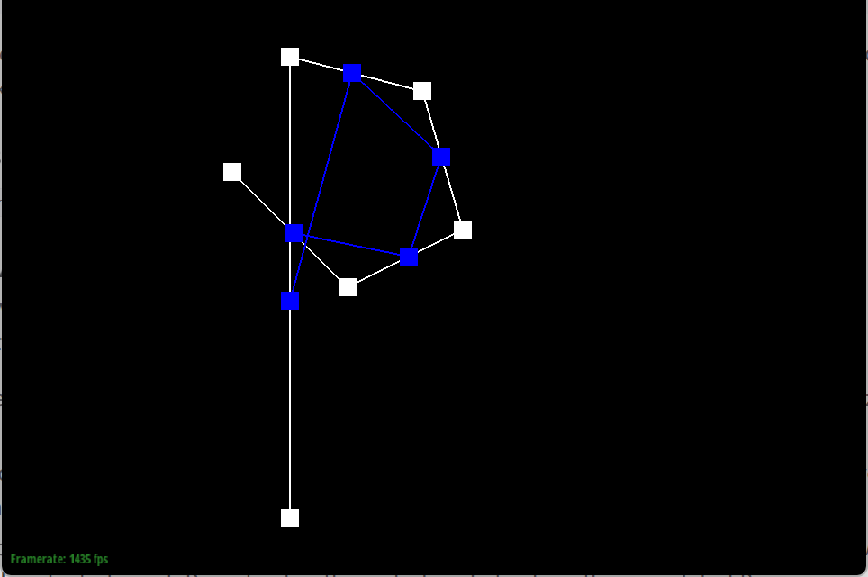
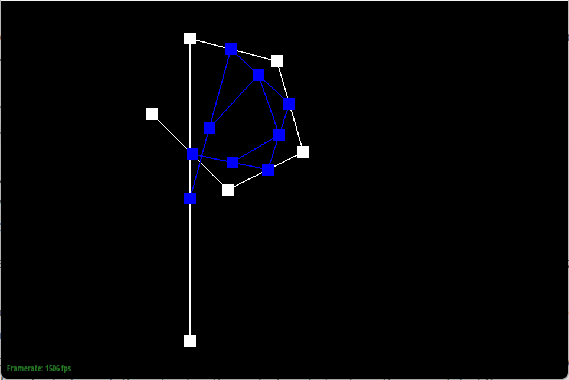
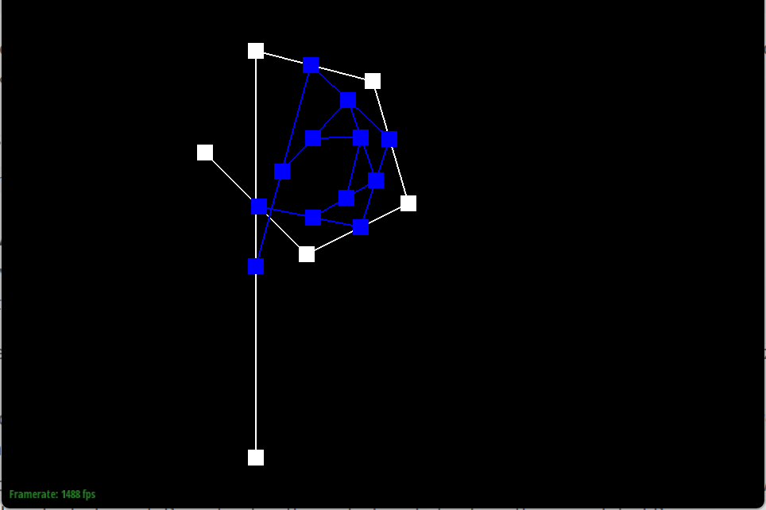
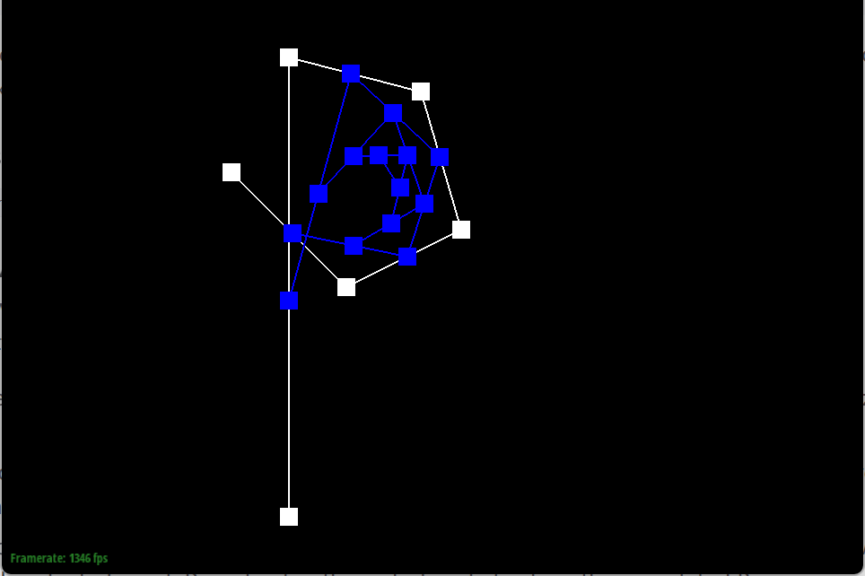
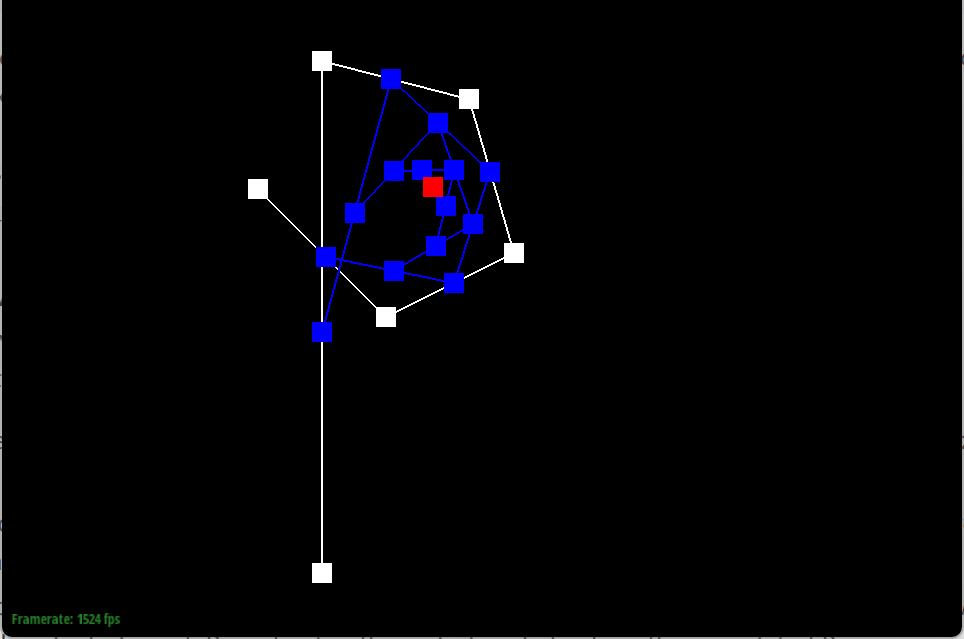
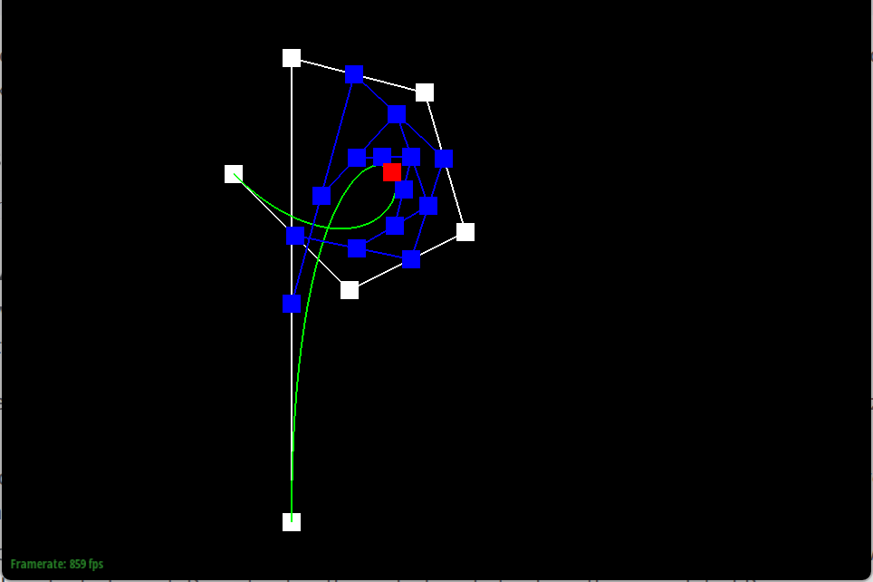
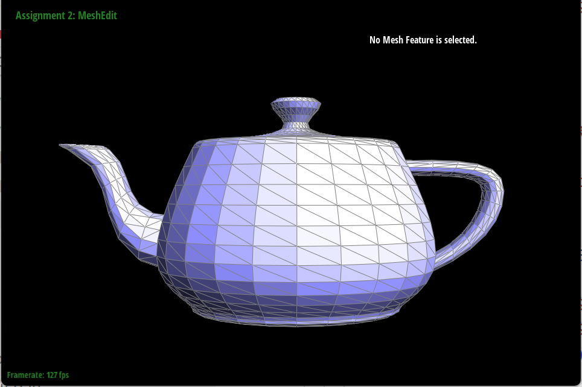
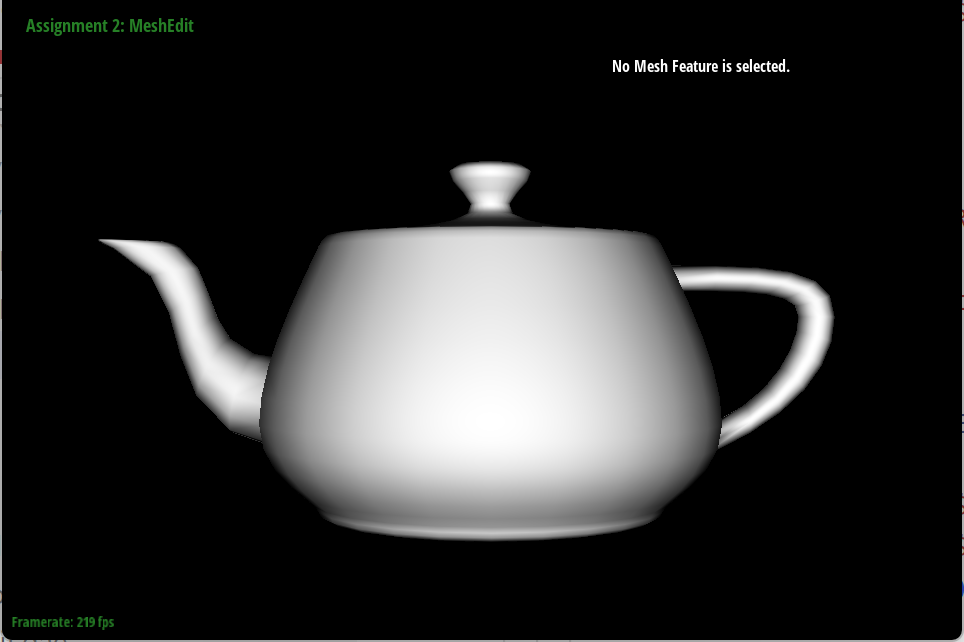

CS184/284A Spring 2025 Homework 2 Write-Up
Link to webpage: https://cal-cs184-student.github.io/hw-webpages-peter_pyotr/
Link to GitHub repository: https://github.com/cal-cs184-student/sp25-hw2-pyotr
Overview
In this homework, I developed a comprehensive mesh editing system that spans both parametric and polygonal representations. In Section I, I implemented Bezier curves and surfaces using de Casteljau’s algorithm. This allowed for smooth, infinitely scalable curves and surfaces by recursively subdividing control points. In Section II, I worked extensively with a half‐edge data structure to represent triangle meshes. I implemented several key mesh processing operations, including area‐weighted vertex normals for smooth Phong shading, local edge flip operations for remeshing, and edge splits to increase mesh resolution.
I then combined these operations in a Loop subdivision scheme to upsample the mesh. This required careful recalculation of vertex positions using weighted averages, as well as strategic use of edge splits and selective edge flips to maintain mesh quality and symmetry. Through this project, I gained valuable insight into the importance of robust data structures for geometry processing. In particular, I learned how a well-designed half‐edge representation can simplify complex topological operations, even though its pointer manipulation requires careful debugging and validation.
Overall, this assignment deepened my understanding of both the mathematical foundations (such as de Casteljau’s algorithm and vertex weighting formulas) and the practical challenges of managing dynamic mesh connectivity. The experience of debugging subtle pointer issues and ensuring consistent mesh topology has greatly enhanced my skills in low-level graphics programming.
Section I: Bezier Curves and Surfaces
Part 1: Bezier curves with 1D de Casteljau subdivision
In this part, I implemented the de Casteljau algorithm for evaluating Bezier curves of arbitrary degree using a simple 1D subdivision approach.
De Casteljau's Algorithm (Brief Explanation)
The core idea of de Casteljau's algorithm is to perform repeated linear interpolations between consecutive control points until only one point remains, which lies on the Bezier curve. Specifically, if we have \( n+1 \) control points \( \{ P_0, P_1, \dots, P_n \} \), then for a parameter \( t \in [0,1] \), we create new "sub-control" points by linear interpolation:
\[
P_i^{(1)} = (1 - t) P_i + t \, P_{i+1}, \quad \text{for } i=0,\dots,n-1
\]
\[
P_i^{(2)} = (1 - t) P_i^{(1)} + t \, P_{i+1}^{(1)}, \quad \text{etc.}
\]
We repeat this process until only one point remains, which is the point on the curve for the parameter \( t \). This recursive subdivision approach is both intuitive and straightforward to implement.
Implementation Details
I stored the original control points from the .bzc file in a list. Each time I pressed E in the viewer, I performed a single step of de Casteljau subdivision (i.e., one level of linear interpolations), updating the intermediate control points. Once I reached the final single point, that point was displayed in red to indicate the evaluated position on the curve. Pressing C toggled the visibility of the final Bezier curve.
Bezier Curve with 6 Control Points
I created my own .bzc file with the following 6 control points as the alphabet 'P'(Since my English Name is Peter):
- (0.500, 0.100)
- (0.500, 0.900)
- (0.730, 0.840)
- (0.800, 0.600)
- (0.600, 0.500)
- (0.400, 0.700)
Below are screenshots showing the step-by-step subdivision process (pressing E each time) from the original control polygon down to the final point on the curve. I also included a toggle (C) that shows the entire curve:
|

|

|
|

|

|
|

|

|
Moving Control Points and Changing Parameter t
Next, I slightly modified the original control points and used mouse scrolling to change the parameter t. This allowed me to see how the final point on the Bezier curve moves in real time. Below is a screenshot of the curve after moving some control points around, with the evaluated point shifting as I scrolled t:
Part 2: Bezier surfaces with separable 1D de Casteljau
In this part, I extended the de Casteljau algorithm from 1D Bezier curves to 2D Bezier surfaces. Essentially, a Bezier surface of degree \((n,m)\) can be treated as a grid of control points of size \((n+1)\times(m+1)\). The core insight is that the 2D de Casteljau subdivision can be performed in a separable manner:
\[ \text{Surface}(u,v) = \text{deCasteljau2D}(\{\text{controlPoints}\}, u, v). \]
Separable 1D Approach
For each row of control points, I considered them as a 1D Bezier curve parameterized by \(u\). By applying the 1D de Casteljau steps to each row, I obtained a single point per row, effectively collapsing the surface grid into a 1D list of points. Then, I treated this 1D list as a Bezier curve parameterized by \(v\). Evaluating this second curve gave me the final 3D point on the surface for parameters \((u, v)\). This method is sometimes referred to as separable de Casteljau.
Implementation Details
I reused the same linear interpolation logic from Part 1, but structured it so that I could:
- Take each row of \((n+1)\) points and evaluate them at \(u\), producing a single point per row.
- Take the resulting list of \((n+1)\) points (now effectively a curve) and evaluate them at \(v\).
This final step yields the point on the surface at parameters \((u, v)\).
Below is a screenshot of my implementation running on the provided teapot.bez file. In the viewer, the surface is displayed as a triangulated mesh after sampling the parametric surface.
I confirmed that changing the underlying control points (or adjusting u and v interactively) properly updated the displayed surface in real time, demonstrating the 2D de Casteljau approach.
Section II: Triangle Meshes and Half-Edge Data Structure
Part 3: Area-Weighted Vertex Normals
In this part, I implemented area‐weighted vertex normals to improve the shading of the mesh using Phong shading. The idea is to iterate over every face incident to a vertex, compute that face’s normal (using the cross product of two of its edge vectors, which naturally gives an area–weighted normal), sum these weighted normals, and finally normalize the result to obtain the unit normal.
Implementation Overview
For each vertex, I used the half-edge data structure to traverse all incident faces. In particular, I started at the vertex’s associated half-edge and followed the twin()->next() pointers to visit every neighboring face. For each face, I computed the normal vector via the cross product of two edge vectors. By summing these normals and normalizing the total, I obtained an area–weighted average normal.
Key Points in the Implementation:
- Only
constiterators (HalfedgeCIter) are used since the function is a const member function and must not modify any vertex data. - The face’s normal is calculated using its three vertices; the cross product of two edge vectors yields a vector whose magnitude is proportional to the face area.
- The final normal is obtained by normalizing the sum of the area–weighted normals.
Below is an example screenshot of the teapot model (dae/teapot.dae) with Phong shading enabled (using vertex normals) compared to flat shading. Pressing Q toggles between these shading modes.
|

|
|
|
|

|
Part 4: Edge Flip
For this part, I implemented a local edge flip operation on a triangle mesh using the half‐edge data structure. The edge flip takes two adjacent triangles that share an edge and “flips” that edge so that it connects the two opposite vertices. For example, if the two triangles are (a, b, c) and (c, b, d) with shared edge (b, c), the flip operation replaces (b, c) with (a, d), resulting in triangles (a, d, c) and (a, b, d).
Implementation Overview:
I first retrieved the necessary half‐edges from the edge to be flipped, as well as their associated faces and vertices. Using the helper function prev() (which returns the previous half‐edge in a face’s circular linked list), I was able to determine the vertices a, b, c, and d. Then I reassigned the vertex pointers for the two half‐edges to “flip” the edge (i.e. setting one half‐edge’s target to d and the other’s to a). Finally, I updated all of the next, twin, and face pointers in both incident faces so that their half‐edge loops are correctly re‐established.
Below are screenshots of the teapot model rendered before and after several edge flips:

Part 5: Edge Split
In this part, I implemented an edge split operation on the mesh using the half‐edge data structure. The split operation takes an edge shared by two triangles, inserts a new vertex at the midpoint of that edge, and then updates the mesh connectivity so that the original two triangles are subdivided into four smaller triangles. For example, given triangles (a, b, c) and (c, b, d) sharing the edge (b, c), splitting the edge inserts a new vertex m at the midpoint and re‐connects it to vertices a and d, yielding four triangles.
Implementation Overview:
I first checked that the edge to be split is not a boundary edge (unless extra credit is enabled). The midpoint of the edge is computed from its two endpoint positions, and a new vertex is created at that position. Using the half‐edge data structure, I then updated the connectivity of the two adjacent triangles by creating new half‐edges, new edges, and new faces. In this process, all pointers (next, twin, vertex, edge, face) are carefully reassigned so that the mesh remains manifold and all face loops are closed.
Below are screenshots illustrating the mesh before and after performing edge splits, as well as after a combination of edge splits and flips:
Part 6: Loop Subdivision for Mesh Upsampling
Loop subdivision is used to upsample a coarse triangle mesh to a higher–resolution mesh with a smooth appearance. The algorithm consists of two main stages: (1) subdividing each triangle into four smaller triangles by splitting each edge, and (2) updating vertex positions via a weighted average of neighboring vertices.
Subdivision Stage (4-1 Subdivision)
In this stage, every edge of the original mesh is split. This creates new vertices at the midpoints of edges, and each original triangle is subdivided into four smaller triangles. However, after splitting, every original edge is represented by two edges. To avoid undesirable artifacts, we only flip the new edges that connect an old vertex with a new vertex, while the new edges that lie along the boundary of the subdivided triangle remain unflipped.
Vertex Update Stage
Each vertex’s new position is computed from the original positions. For an old (original) vertex with degree n, the updated position is given by:
\( V_{\text{new}} = (1 - n \cdot u) \, V_{\text{orig}} + u \sum_{i=1}^{n} V_i \)
where \( u \) is a weight constant (with \( u = \frac{3}{16} \) when \( n=3 \) and \( u = \frac{3}{8n} \) otherwise), and \( V_i \) are the positions of the neighboring vertices. For new vertices (inserted on an edge), the position is computed as:
\( V_{\text{new}} = \frac{3}{8}(A+B) + \frac{1}{8}(C+D) \)
where A and B are the endpoints of the original edge, and C and D are the vertices opposite the edge in the two adjacent triangles.
Symmetry and the Cube Example
A common issue in Loop subdivision is that the resulting mesh can become asymmetric after repeated subdivisions. In my experiments with a cube, I observed that if the initial edge splits are performed asymmetrically (for example, if the triangulation of a cube face is not uniform), the subdivided cube becomes slightly unsymmetric over iterations. However, when I pre-process the cube by splitting certain edges to enforce a symmetric triangulation, the subsequent subdivision preserves symmetry.
Implementation & Debugging Tips
To implement Loop subdivision, I broke the process into three steps:
- Step A: Compute new positions for both old and new vertices using the original mesh. This ensures that all vertex updates are based on the same original data.
- Step B: Subdivide the mesh by splitting every original edge (using the edge split operation) and then flip any new edge connecting an old vertex with a new vertex.
-
Step C: Update the positions of all vertices in the subdivided mesh by copying the computed new positions to the final
positionfield.
Observations:
- Sharp corners tend to round off quickly as the vertex updates blend neighboring positions.
- Pre–splitting edges to enforce symmetry significantly improves the appearance of the subdivided cube.
- The use of constant-time local operations (edge splits and flips) ensures that the algorithm scales well even for complex meshes.
This approach provided a smooth, high-resolution approximation of the original mesh, while my pre–processing of the cube helped mitigate the asymmetric effects observed in repeated subdivisions.